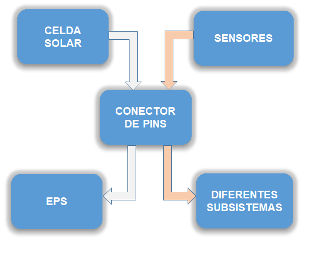

Deseño e fabricación de paneis solares en fibra de carbono para o seu uso en satélites
Autor
Martiño Crespo Álvarez
Titores
Antonio Vázquez García
Jorge Marcos Acevedo
ÍNDICE
Introdución
Xeración de enerxía
Etapa de deseño e fabricación
Conclusións e liñas futuras
Subsistemas xerais dun satélite
ÍNDICE
Introdución
Xeración de enerxía
Etapa de deseño e fabricación
Conclusións e liñas futuras
XERACIÓN E ALMACENAMENTO DE ENERXÍA
PANEIS SOLARES (I)
PANEIS SOLARES (II)
Maior resistencia a esforzos
Máis lixeiros
Mellor condutividade térmica
ÍNDICE
Introdución
Xeración de enerxía
Etapa de deseño e fabricación
Conclusións e liñas futuras
DESEÑO (I)
DESEÑO (II)
RESULTADO ESPERADO

CURADO CFRP

CIRCUÍTO FLEXIBLE (I)
CIRCUÍTO FLEXIBLE (II)
PASOS
Imprimir negativo en acetato
Lámina + film fotoresistivo + negativo
2-3 min en insoladora
Tratar con disolucións
CIRCUÍTO FLEXIBLE (III)
INTEGRACIÓN PCM
PROBLEMAS
Proceso de curado
Vacuum bagging
PROCESO DE CURADO (I)
PROCESO DE CURADO (II)
PROBLEMAS
Proceso de curado
Vacuum bagging
VACUUM BAGGING (I)
VACUUM BAGGING (II)
VACUUM BAGGING (III)
APARTADO ECONÓMICO
ÍNDICE
Introdución
Xeración de enerxía
Etapa de deseño e fabricación
Conclusións e liñas futuras
CONCLUSIÓNS
Fabricación
Consecución do obxectivo
Baixos custos
Resultado
Acceder aos sensores e á tensión
Boas características mecánicas
Traballo en equipo
LIÑAS FUTURAS
Medición exhaustiva
Paneis con máis celdas
Automatización
Comercialización